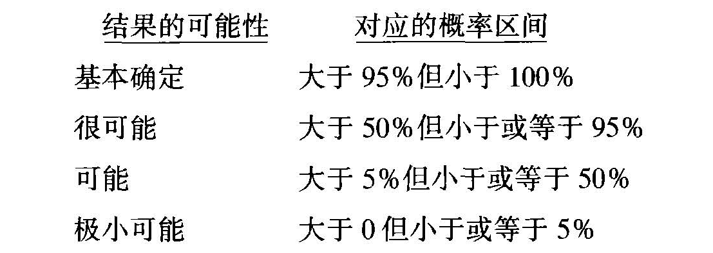
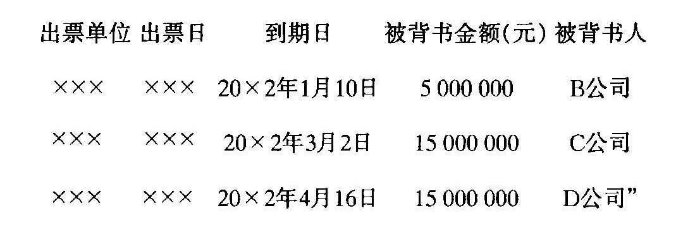
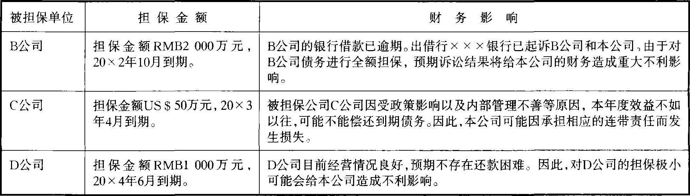

《企业会计准则——或有事项》指南
一、基本要求
（一）企业应正确地理解和把握本准则涉及的主要概念
本准则涉及较多概念，比如或有事项、资产、负债、或有资产、或有负债等，正确地理解和把握这些概念是正确运用本准则的基本前提。
在本准则中，或有事项是指过去的交易或事项形成的一种状况，其结果须通过未来不确定事项的发生或不发生予以证实。如未决诉讼、产品质量保证、债务担保等就是或有事项。或有事项与不确定性联系在一起，但在会计处理过程中存在的不确定性并不都形成本准则所指或有事项。比如，折旧的提取虽然涉及对固定资产残值和使用年限的估计，带有一定的不确定性，但固定资产原值本身是确定的，其价值最终要转移到产品中去也是确定的，因此，固定资产折旧不是或有事项。类似地，固定资产大修理、正常维护等，也不是或有事项。又如，坏账准备的计提，虽然涉及到账龄和坏账比率的估计，带有一定的不确定性，但应收款项的账面余额是确定的。因此，坏账准备的计提不是或有事项。从性质上讲，它只是根据资产的定义，对应收款项的账面余额所作的调整。类似地，计提存货跌价准备、短期投资跌价准备、长期投资减值准备等，均不属于或有事项。
资产、负债、或有负债、或有资产等，都可能是或有事项的结果。比如未决诉讼。
对于预期会胜诉的原告而言，因未决诉讼产生了一项或有资产；该或有资产最终是否转化为企业的资产，要根据诉讼的最终调解或判决来定。而对于预期会败诉的被告而言，因未决诉讼产生了一项负债或或有负债；如为或有负债，那么该或有负债最终是否转化为企业的负债，也只能根据诉讼的最终调解或判决而定。
（二）企业应注意“可能性”档次的划分及其对会计处理的影响
本准则中，较多地使用了可能性这一概念，比如第4条中的“该义务的履行很可能导致经济利益流出企业”、第9条中的“其他或有负债（不包括极小可能导致经济利益流出企业的或有负债）”和第11条中的“但或有资产很可能会给企业带来经济利益时”，等等。对此，企业应给予特别关注，以便正确地核算和披露或有事项。

（三）企业应持续地对与或有负债和或有资产有关的因素进行评价
影响或有负债的因素是多方面的，而且这些因素处在不断变化当中。企业应持续地对这些因素进行评价，以判断潜在义务是否已转化成现时义务。如果或有负债对应的潜在义务已转化成现时义务，则应进一步判断履行该义务是否很可能导致经济利益流出企业、该义务的金额是否能够可靠地计量。如果履行该义务很可能导致经济利益流出企业，且该义务的金额能够可靠地计量，则企业应将该义务确认为一项负债；否则，应按本准则的规定作相关披露或不披露。
同样地，企业应持续地对与或有资产有关的因素进行评价，以判断或有资产给企业带来经济利益的可能性是否发生变化，并相应地做出处理。一般情况下，企业不应披露或有资产。但是，如果或有资产很可能给企业带来经济利益，则企业应对其进行披露。
（四）企业应正确地核算因或有事项而确认的负债
为正确地核算和披露因或有事项而确认的负债，企业应设置“预计负债”科目，并在该科目下分别不同性质设置“产品质量保证”、“未决诉讼”、“债务担保”等明细科目，进行明细核算。”预计负债”科目余额应在资产负债表负债方单项列报。
二、说明
（一）关于引言
本准则第2条明确了不涉及的或有事项，即不涉及债务重组、建造合同、所得税、保险合同、终止营业、租赁、企业重组、环境污染整治等项目引起并由其他会计准则规范的或有事项。
在采用修改其他债务条件进行债务重组时，如果修改后的债务条件涉及或有支出，那么该或有支出是否转化为实际支出，将由债务人未来经营情况是否好转来定。根据或有事项的定义，债务重组所涉及的或有支出（对应于债权人，则为或有收益）属于或有事项。这些或有事项的会计处理由《企业会计准则——债务重组》规范，不在本准则中涉及。
《企业会计准则——建造合同》也涉及或有事项。当合同总成本预计超过合同总收入时，建造合同便成为亏损性合同。根据或有事项的定义，这种亏损性建造合同形成的或有支出属于或有事项。这些或有事项的会计处理由《企业会计准则——建造合同》规范，不在本准则中涉及。
此外，所得税、保险合同、终止营业、租赁、企业重组、环境污染整治等引起的或有事项，本准则也不涉及，而由相关的其他会计准则规范。
（二）关于定义
本准则第3条对以下术语作了定义：或有事项、负债、资产、或有负债和或有资产。
1.或有事项
本准则第3条将或有事项定义为“过去的交易或事项形成的一种状况，其结果须通过未来不确定事项的发生或不发生予以证实”。
常见的或有事项有：商业票据背书转让或贴现，未决诉讼、未决仲裁、产品质量保证（含产品安全保证）等。
或有事项具有以下基本特征：
（1）或有事项是过去的交易或事项形成的一种状况。
或有事项作为一种状况，是企业过去的交易或事项而引起的。比如，产品质量保证是企业对已售出商品或已提供劳务的质量提供的保证，不是为尚未出售商品或尚未提供劳务的质量提供的保证，未决诉讼虽是正在进行当中的诉讼，但它是企业因过去的经济行为起诉其他单位或被其他单位起诉引起的，是现存的一种状况，不是将要存在的某种状况。或有事项是现存的状况，说明或有事项是资产负债表日的一种客观存在。它的结果对企业是产生有利影响还是不利影响，或虽已知是有利影响或不利影响，但影响有多大，只能由未来发生的交易或事项来确定，现在尚不能完全肯定。
由于或有事项是由过去的交易或事项而形成的状况这一特征，因此，未来可能发生的自然灾害、未来可能发生的交通事故、未来可能发生的经营亏损等事项不构成本准则所指或有事项。
（2）或有事项具有不确定性。
或有事项内含不确定性，指的是或有事项的结果具有不确定性。首先，或有事项的结果是否发生具有不确定性。比如为其他单位提供债务担保，如果被担保方到期无力还款，那么担保方将负连带责任，对于担保方而言，担保事项构成其或有事项，但最后它是否应履行连带责任，在担保协议达成时是不能确定的。再比如有些未决诉讼，被起诉的一方是否会败诉，有时是难以确定的。其次，或有事项的结果即使预料会发生，但具体发生的时间或发生的金额具有不确定性。比如，某企业因生产排污治理不力并对周围环境造成污染而被起诉，如无特殊情况，该企业很可能败诉。但是，在诉讼成立时，该企业因败诉将支出多少金额，或支出发生在何时，是难以确知的。或有事项的这种不确定性，是其区别其他不确定性会计事项的重要特征。
（3）或有事项的结果只能由未来发生的事项确定。
或有事项的结果，在或有事项发生时，是难以证实的。这种不确定性的消失，需要由未来不确定事项的发生或不发生来证实。比如未决诉讼，其最终结果只能随案情的发展，由判决结果来确定。又比如企业为其他单位提供债务担保，如果被担保单位不能在债务到期时偿还债务，则企业需要履行偿还债务的连带责任。
但该担保事项是否真的会要求企业履行偿还债务的连带责任，一般只能看被担保单位的未来经营情况和偿债能力。如果被担保单位经营情况和财务状况良好，且有较好的信用，那么企业将不需要履行该连带责任，或有事项的结果只能由未来发生的事项证实的特征，说明或有事项具有时效性。也就是说，随着影响或有事项结果的因素发生变化，或有事项最终会转化为确定事项。
（4）影响或有事项结果的不确定因素不能由企业控制。
或有事项本身具有的不确定性，从一个侧面说明了影响或有事项结果的不确定因素不能由企业控制。仍以债务担保为例。担保企业将来是否会因提供担保而履行连带责任，不是企业能控制得了的。未决诉讼的最终结果如何，也不是企业能控制的。
2.负债
本准则第3条将负债定义为“过去的交易或事项形成的现时义务，履行该义务预期会导致经济利益流出企业”。
以上定义所指的义务包括法定义务和推定义务。法定义务，通常是指企业在经济管理和经济协调中，依照经济法律、法规的规定必须履行的责任。比如，企业与另外的企业签订购货合同产生的义务，就属于法定义务。因国家法律、法规的要求产生的义务，如企业按税法要求交纳所得税的义务，也属于法定义务。推定义务，通常是指企业在特定情况下产生或推断出的责任。比如，甲公司是一家化工企业，因扩大经营规模，到A国创办了一家分公司，假定A国尚未针对甲公司这类企业的生产经营可能产生的环境污染制定相关法律，因而甲公司的分公司对在A国生产经营可能产生的环境污染不承担法定义务。但是，甲公司为在A国树立良好的形象，自行向社会公告，宣称将对生产经营可能产生的环境污染进行治理。甲公司的分公司为此承担的义务就属于推定义务。
负债具有以下基本特征：
（1）负债是企业的现时义务。
负债是企业的现时义务，即是说，负债作为企业的一种义务，是由企业过去的交易或事项形成的，现已承担的义务。比如，银行借款是因为企业接受了银行贷款形成的，如果没有接受贷款就不会发生银行借款这项负债。应付账款是因为采用信用购买商品或接受劳务形成的；在这种购买未发生之前，相应的应付账款并不存在。
（2）负债的清偿预期会导致经济利益流出企业。
无论负债对应的现时义务是法定义务还是推定义务，其履行预期均会导致经济利益流出企业。具体表现为交付资产、提供劳务、将一部分股权转给债权人等。
对此，企业不能或很少可以回避。从这个意义上讲，如果企业能够回避义务，则不能相应地确认一项负债。
3.资产
本准则第3条将资产定义为“过去的交易或事项形成并由企业拥有或者控制的资源，该资源预期会给企业带来经济利益”。
资产具有以下基本特征：
（1）资产是由过去的交易或事项形成并由企业拥有或者控制的资源。
资产是由过去的交易或事项形成并由企业拥有或者控制的资源。即是说，形成资产的交易或事项已经发生。比如，已经发生的固定资产购买交易才形成资产，而计划中的固定资产购买则不形成购买企业的资产。其次，资产必须是由企业拥有或控制的资源。如果企业不能拥有或控制能创造经济利益的某项目（资源），则企业不能将该项目视作其资产。比如某项专利权，如果企业不能通过自创并申请成功、购入等方式拥有或控制它，那么企业就不能将该专利权视作其资产。又比如经营租人的固定资产，由于企业不能控制它，因而不能将其作为企业的资产；而融资租入的固定资产，虽然企业不拥有其所有权，但能够控制它，因而应将其作为企业的资产。所有权或控制权的存在，对于判断某项目是否是企业的资产是至关重要的。
（2）资产预期会给企业带来经济利益。
所谓经济利益，指直接或间接流入企业的现金或现金等价物。资产之所以成其为资产，就在于其能够给企业带来经济利益。换句话说，如果某项目不能给企业带来经济利益，那么该项目不能作为企业的资产。比如待处理财产损失，由于其是已发生但未批准处理的损失，预期不会导致经济利益流入企业，因而不能作为企业的资产，资产导致经济利益流入企业的方式有多种。比如，单独或与其他资产结合起来为企业创造经济利益、换取其他资产。用于偿付债务等。
4.或有负债
本准则第3条将或有负债定义为“过去的交易或事项形成的潜在义务，其存在须通过未来不确定事项的发生或不发生予以证实；或过去的交易或事项形成的现时义务，履行该义务不是很可能导致经济利益流出企业或该义务的金额不能可靠地计量”。
或有负债具有以下特征：
（1）或有负债由过去的交易或事项产生。
或有负债是过去的交易或事项形成的。比如，20X1年12月25日，甲企业状告乙企业侵犯了其专利权。至20X1年12月31日，法院还没有对诉讼案进行公开审理，乙企业是否败诉尚难判断。对于乙企业而言，一项或有负债已经形成。它是由过去事项（乙企业“可能侵犯”甲企业的专利权并受到起诉）
形成的。而企业计划在三个月后购入一批原材料可能须承担支付货款的义务则不属于或有负债。
（2）或有负债的结果具有不确定性。
或有负债包括两类义务，一类是潜在义务；另一类是特殊的现时义务。或有负债作为一项潜在义务，其结果如何只能由未来不确定事项的发生或不发生来证实。比如，200X年12月2日，甲企业因故与乙企业发生经济纠纷，并且被乙企业提起诉讼。
直到200X年末，该起诉讼尚未进行审理。由于案情复杂，相关的法律法规尚不健全，从200X年末看，诉讼的最后结果如何尚难确定。200X年末，甲企业承担的义务就属于潜在义务。
或有负债作为特殊的现时义务，其特殊之处在于：该现时义务的履行不是很可能导致经济利益流出企业，或者该现时义务的金额不能可靠地计量。其中，“不是很可能导致经济利益流出企业”指的是，该现时义务导致经济利益流出企业的可能性不超过50%（含50%），比如，200X年12月20日，甲企业与乙企业签订担保合同，承诺为乙企业的三年期项目贷款提供担保。由于担保合同的签订，甲企业承担了一项现时义务。但是，承担现时义务并不意味着经济利益将很可能因此而流出甲企业。如果200X年度乙企业的财务状况良好，则说明甲企业履行连带责任的可能性不大。也就是说，从200X年看，甲企业不是很可能被要求流出经济利益以履行该义务。为此，甲企业应将该项现时义务作为或有负债披露。
“金额不能可靠地计量”指的是，该现时义务导致经济利益流出企业的“金额”难于预计。这一特殊性表明，作为现时义务的或有负债其结果是不确定的。
比如，200X年12月24日，某单位全体员工发生食物中毒，而甲公司恰是食物提供者，中毒事件发生后，甲公司得知此事，并承诺负担一切赔偿费用。直到12月31日，事态还在发展中，赔偿费用难以预计。此时，甲公司承担了现时义务，但义务的金额不能可靠地计量。
5.或有资产
本准则第3条将或有资产定义为“过去的交易或事项形成的潜在资产，其存在须通过未来不确定事项的发生或不发生予以证实”。
或有资产具有以下特征：
（1）或有资产由过去的交易或事项产生。
或有资产是过去的交易或事项形成的。比如，20X1年12月25日，甲企业状告乙企业侵犯了其专利权，至20X1年12月31日，法院还没有对诉讼案进行公开审理，甲企业是否胜诉尚难判断。对于甲企业而言，将来可能胜诉而获得的资产属于一项潜在资产，它是由过去事项（乙企业“可能侵犯”甲企业的专利权并受到起诉）形成的。但是，如果某企业计划在三个月后购入一批原材料，那么因此可能获得的资产并不是或有资产，因为企业的计划并不是过去的“交易或事项”。
（2）或有资产的结果具有不确定性。
或有资产是一种潜在资产，随着经济情况的变化，其是否会形成企业真正的资产，须通过不完全由企业控制的未来不确定事项的发生或不发生才能证实。沿用以上例子，甲企业的或有资产，是否真的会转化成其真正的资产，要由诉讼案件的调解或判决结果确定。如果终审判决结果是甲企业胜诉，那么或有资产便转化为一项基本可以肯定收到的资产。如果终审判决结果是甲企业败诉，那么或有资产便“消失”了；相反，还应承担一项支付诉讼费的义务。
（三）关于或有事项的确认
本准则第4条规定了或有事项确认的条件，即如果与或有事项相关的义务同时符合以下条件，企业应将其确认为负债：（1）该义务是企业承担的现时义务；（2）
该义务的履行很可能导致经济利益流出企业；（3）该义务的金额能够可靠地计量。
1.该义务是企业承担的现时义务
“该义务是企业承担的现时义务”，指与或有事项有关的义务为企业承担的现时义务而非潜在义务。
比如，甲公司的一名司机因违犯交通规则造成严重交通事故，为此，甲公司将要承担赔偿义务。在这个例子中，违规事项发生后，甲公司随即承担的是一项现时义务。
又如，甲公司与乙公司发生经济纠纷，调解无效。甲公司遂于20X1年12月28日向法院提起诉讼。至20X1年12月31日，法院尚未判决，但法庭调查表明，乙公司的行为违反了国家的有关经济法规。这种情况表明，对乙公司而言，一项现时义务已经产生。
2.该义务的履行很可能导致经济利益流出企业
在本准则中，“很可能”指发生的可能性为“大于50%但小于或等于95%”。
因此，“该义务的履行很可能导致经济利益流出企业”指的是，履行因或有事项产生的现时义务时，导致经济利益流出企业的可能性超过50%但尚未达到基本确定的程度。
企业因或有事项承担了现时义务，并不说明该现时义务很可能导致经济利益流出企业。比如，20X1年5月1日，丙企业与丁企业签订协议，承诺为了企业的二年期银行借款提供全额担保。对于丙企业而言，由于担保事项而承担了一项现时义务。
这项义务的履行是否很可能导致经济利益流出企业，需依据丁企业的经营情况和财务状况等因素来定。假定20X1年末，丁企业财务状况良好。此时，如果没有其他特殊情况，一般可以认定丁企业不会违约，从而丙企业履行承担的现时义务不是很可能导致经济利益流出；假定20X1年来，丁企业的财务状况恶化，且没有迹象表明可能发生好转。此种情况出现，表明丁企业很可能违约，从而丙企业履行承担的现时义务将很可能导致经济利益流出企业。
3.该义务的金额能够可靠地计量
“该义务的金额能够可靠地计量”指的是，因或有事项产生的现时义务的金额能够合理地估计。
由于或有事项具有不确定性，因此，因或有事项产生的现时义务的金额也具有不确定性，需要估计。要对或有事项确认一项负债，相关现时义务的金额应能够可靠估计。
比如，甲企业（被告）涉及一桩诉讼案。根据以往的审判案例推断，甲企业很可能要败诉，相关的赔偿金额也可以估算出一个范围。这种情况下，可以认为甲企业因未决诉讼承担的现时义务的金额能够可靠地估计，从而应对未决诉讼确认一项负债。
但是，如果没有以往的案例可与甲企业涉及的诉论案作比照，而相关的法律条文又没有明确解释，那么即使甲企业可能败诉，在判决以前通常也不能推断现时义务的金额能够可靠估计。对此，甲企业不应对未决诉讼确认一项负债。
（四）关于或有事项的计量
或有事项的计量主要涉及两个问题：一是最佳估计数的确定；二是预期可获得的补偿的处理。
1.最佳估计数的确定
本准则第5条规定，因或有事项而确认的负债的金额，应是清偿该负债所需支出的最佳估计数。
其中，最佳估计数的确定分两种情况考虑。
（1）所需支出存在一个金额范围。
本准则规定，如果所需支出存在一个金额范围，则最佳估计数应按该范围的上下限金额的平均数确定。
比如，20X1年12月27日，甲企业因合同违约而涉及一桩诉讼案，根据企业的法律顾问判断，最终的判决很可能对甲企业不利。20X1年12月3 1日，甲企业尚未接到法院的判决，因诉讼须承担的赔偿金额也无法准确地确定。
不过，据专业人士估计，赔偿金额可能是80万元至100万元之间的某一金额。
根据本准则的规定，甲企业应在20X1年12月31日的资产负债表中确认一项金额为90万元[(80+100)/2=90万元]的负债。
（2）所需支出不存在一个金额范围。
本准则规定，如果所需支出不存在一个金额范围，则最佳估计数应按如下方法确定：
①或有事项涉及单个项目时，最佳估计数按最可能发生金额确定。
“涉及单个项目”，指或有事项涉及的项目只有一个，比如一项未决诉讼、一项未决仲裁或一项债务担保等。
比如，甲公司涉及一起诉讼。根据类似案件的经验以及公司所聘律师的意见判断，甲公司在该起诉讼中胜诉的可能性有40%，败诉的可能性有60%。如果败诉，将要赔偿100万元，在这种情况下，甲公司应确认的负债金额（最佳估计数）应为最可能发生金额100万元。
②或有事项涉及多个项目时，最佳估计数按各种可能发生额及其发生概率计算确定。
“涉及多个项目”，指或有事项涉及的项目不止一个，比如产品质量保证。
在产品质量保证中，提出产品保修要求的可能有许多客户。相应地，企业对这些客户负有保修义务。
比如，20X2年，乙企业销售产品3万件，销售额为1.2亿元。乙企业的产品质量保证条款规定：产品售出后一年内，如发生正常质量问题，乙企业将免费负责修理。根据以往的经验，如果出现较小的质量问题，则须发生的修理费为销售额的1%；而如果出现较大的质量问题，则须发生的修理费为销售额的2%。据预测，本年度已售产品中，有80%不会发生质量问题，有15%将发生较小质量问题，有5%将发生较大质量问题。据此，20X2年年末乙企业应确认的负债金额（最佳估计数）为：(1.2×1%)×15%+(1.2×2%)×5%=0.003（亿元）
2.预期可获得的补偿的处理
本准则第6条规定，如果清偿因或有事项而确认的负债所需支出全部或部分预期由第三方或其他方补偿，则补偿金额只能在基本确定能收到时，作为资产单独确认，且确认的补偿金额不应超过所确认负债的账面价值。
（1）可能获得补偿的情况。
可能获得补偿的情况通常有：
①发生交通事故等情况时，企业通常可以从保险公司获得合理的赔偿；
②在某些索赔诉讼中，企业可以通过反诉的方式对索赔人或第三方另行提出赔偿要求；
③在债务担保业务中，企业在履行担保义务的同时，通常可以向被担保企业提出额外追偿要求。
（2）“基本确定”的涵义。
在本准则中，补偿金额“基本确定”能收到，是指预期从保险公司、索赔人、被担保企业等获得补偿的可能性大于95%但小于100%的情形。
（3）补偿金额的确认。
补偿金额的确认，涉及两个问题。一是确认时间，二是确认金额。根据本准则的规定，补偿金额只有在“基本确定”能收到时予以确认，确认的金额是基本确定能收到的金额。
有两点需要说明。一是补偿金额应单独确认为资产。比如，甲企业因或有事项确认了一项负债50万元；同时，因该或有事项，甲企业还可从乙企业获得3 5万元的赔偿，且这项金额基本确定能收到，在这种情况下，甲企业应分别确认一项负债50万元和一项资产35万元，而不能只确认一项金额为15万元的负债。二是确认的补偿金额不应超过所确认的负债的账面价值。沿用以上例子，甲企业所确认的补偿不能超过所确认的负债的账面价值50万元。
（五）关于或有事项的披露
1.对或有事项确认的负债
本准则第8条规定，因或有事项确认的负债应在资产负债表中单列项目反映，并在会计报表附注中作相应披露；而与所确认负债有关的费用或支出应在扣除确认的补偿金额后，在利润表中反映。
也就是说，在资产负债表中，对或有事项确认的负债（“预计负债”）应与其他负债项目区别开来，单独反映；同时，还应在会计报表附注中对各项预计负债形成的原因及金额作相应披露，以使会计报表使用者获得充分、详细的有关或有事项的信息。
需要说明的是，如果企业因多项或有事项确认了预计负债，在资产负债表上一般只须通过“预计负债”项目进行总括反映。
在对或有事项确认负债的同时，应确认一项支出或费用。这项支出或费用在利润表中不应单列项目反映，而应与其他费用或支出项目（如“营业费用”、“管理费用”、“营业外支出”等）合并反映。比如，企业因产品质量保证确认负债时所确认的费用，在利润表中，应作为“营业费用”的组成部分予以反映；
又比如，企业因对其他单位提供债务担保确认负债时所确认的费用，应作为“营业外支出”的组成部分予以反映。
需要说明的是，如果企业基本确定能获得补偿，那么企业在利润表中反映因或有事项确认的费用或支出时，应将这些补偿预先抵减。比如，甲企业因提供债务担保而确认了金额为30000元的一项负债和一项支出，同时基本确定可以从第三方获得金额为23000元的补偿。在这种情况下，甲企业应在利润表中反映损失7000元。该项损失应在利润表中并入“营业外支出”项目。
2.或有负债的披露
（1）应披露的或有负债。
或有负债无论作为潜在义务，还是现时义务，均不符合负债的确认条件，因而不予确认，但是，如果或有负债符合某些条件，则应予以披露。
本准则第9条规定，企业应在会计报表附注中披露如下或有负债：
①已贴现商业承兑汇票形成的或有负债；
②未决诉讼、仲裁形成的或有负债；
③为其他单位提供债务担保形成的或有负债；
④其他或有负债（不包括极小可能导致经济利益流出企业的或有负债）。
或有负债披露的基本原则是，极小可能导致经济利益流出企业的或有负债一般不予披露，但是，对某些经常发生或对企业的财务状况和经营成果有较大影响的或有负债，即使其导致经济利益流出企业的可能性极小，也应予以披露，以确保会计信息使用者获得足够充分和详细的信息。这些或有负债包括：已贴现商业承兑汇票形成的或有负债、未决诉讼、仲裁形成的或有负债以及为其他单位提供债务担保形成的或有负债。
（2）对或有负债应披露的内容。
关于或有负债应披露的内容，本准则第10条作了如下规定：
①或有负债形成的原因；
②或有负债预计产生的财务影响（如无法预计，应说明理由）；
③获得补偿的可能性。
（3）例外情况。
有时，充分披露未决诉讼、仲裁形成的或有负债信息可能会对企业的生产经营造成重大不利影响。为此，本准则第12条规定，在涉及未决诉讼、仲裁的情况下，如果按本准则的要求披露全部或部分信息预期会对企业造成重大不利影响，则企业无须披露这些信息。但是，这并不表明企业可以不披露任何相关的信息。
本准则规定，在这种情况下，企业至少应披露未决诉讼、仲裁的形成原因。
3.或有资产的披露
（1）应披露的或有资产。
或有资产作为一种潜在资产，不符合资产确认的条件，因而不予确认。但是，如果或有资产符合某些条件，则应予披露。
本准则第11条规定，或有资产一般不应在会计报表附注中披露；但或有资产很可能会给企业带来经济利益时，则应在会计报表附注中披露。
（2）对或有资产应披露的内容。
对或有资产，通常只需披露或有资产的形成原因、预期对企业产生的财务影响等。
在进行或有资产披露时，企业应特别谨慎，不能让会计信息使用者误以为所披露的或有资产肯定会实现。
三、举例
（一）票据贴现、背书转让
【例1】A公司因销售商品取得一张金额为2000万元、到期日为20X2年4月3日的商业承兑汇票。20X1年11月3日，因急需资金，A公司将所持未到期票据向开户银行申请贴现。经审核，贴现银行同意了A公司的申请，并办理了有关手续。
在本例中，因为贴现银行到时不能获得付款时，A公司负有全额偿付的责任，从而A公司因应收票据贴现而承担了一项现时义务，但经济利益是否很可能流出企业尚难确定。根据本准则的规定，A公司应作如下披露：
“或有负债：
20X1年11月3日，本公司将一张未到期商业承兑汇票向开户银行进行贴现。
贴现票据金额为2000万元，到期日为20X2年4月3日。开户银行到时不能获得付款时，本公司负有代为付款的义务”。
【例2】20X1年度，A公司背书转让了三张应收票据，金额合计350 0万元。它们分别是：被背书人B公司，票据金额为500万元，到期日为20X2年1月10日；被背书人C公司，票据金额为1500万元，到期日为20X2年3月2日；被背书人D公司，票据金额1500万元，到期日为20X2年4月16日。
本例中，A公司因背书转让应收票据而承担了现时义务。为此，20X1年12月31日，企业应将由此形成的或有负债予以披露。具体如下：
“或有负债：
截至20X1年12月31日，本公司背书转让应收票据金额合计3500万元。

（二）未决诉讼和未决仲裁
【例3】20X1年11月20日，A银行批准B公司的信用贷款（无担保、无抵押）申请，同意向其贷款2000万元，期限一年，年利率7.2%。20X2年11月20日，B公司的借款（本金和利息）到期。B公司具有还款能力，但因与A银行之间存在其他经济纠纷，而未按时归还A银行的贷款。A银行遂与B公司协商，但没有达成协议。20X2年12月25日，A银行向法院提起诉讼。截至20X2年12月31日，法院尚未对A银行提起的诉讼进行审理。
A银行：
在本例中，如无特殊情况，A银行很可能在诉讼中获胜。因此，从20X2年12月31日看，A银行可以作“很可能胜诉”的判断，并预计除可以收回本金和利息外，还可能获得罚息等。假定A银行根据规定的标准估计，将来最可能获得包括罚息在内的收入为24万元（这项金额在提起诉讼时已估计）。根据本准则的规定，A银行应在20X2年12月31日于资产负债表附注中披露一项或有资产24万元，同时说明很可能收回B公司所欠的贷款本金和利息2144万元。具体如下：
“或有资产：
20X2年11月20日，B公司借本行款项到期末还，本金和利息共计2 144万元，主要原因在于与本行存在其他经济纠纷。协商不成，本行遂于20X2年12月25日向XXX法院提起诉讼，要求B公司偿还所借本金和利息合计2144万元，并支付罚息等费用24万元。目前，有关诉讼正在审理之中”。
B公司：
同样地，如无特殊情况，B公司很可能败诉。为此，B公司不仅须偿还贷款本金和利息，还需要支付罚息，诉讼费等费用。假定B公司预计将要支付的罚息，诉讼费等费用估计为20万元至24万元之间。根据本准则的规定，B公司应在20X2年12月31日确认一项负债22万元[(20+24)/2=22，对方支付的诉讼费为3万元]。有关分录如下：
借：管理费用——诉讼费30000
营业外支出——罚息支出190000
贷：预计负债——未决诉讼220000
同时，B公司还应在资产负债表附注中，作如下披露：
“预计负债：
本公司欠A银行贷款于20X2年11月20日到期，到期本金和利息合计2144万元，由于与A银行存在其他经济纠纷，故本公司尚未偿还上述借款本金和利息。
为此，A银行起诉本公司，除要求本公司偿还本金和利息外，还要求支付罚息等费用。
由于以上情况，本公司在20X2年12月31日确认了一项负债22万元。
目前，此案正在审理中”。
在利润表中，所确认的3万元“管理费用”应与公司发生的其他管理费用合并反映；所确认的19万元“营业外支出”应与公司发生的其他营业外支出合并反映。
【例4】A公司欠B公司货款100万元。按合同规定，A公司应于20X1年10月10日前付清货款，但A公司未按期付款。为此，B公司向法院提起诉讼。
20X1年12月10日，一审判决A公司应向B公司全额支付货款，并按每日万分之五的利率支付货款延付期间的利息3万元；此外，还应承担诉讼费1万元，三项合计104万元。A公司不服，认为B公司所提供的货物不符合双方原来约定条款的要求，并因此向B公司提出索赔要求，金额为20万元。截至20X1年12月31日，该诉讼尚在审理当中。
A公司：
在本例中，虽然一审已经判决，但A公司不服，因此不能认为诉讼事件已结束。
一审判决结果表明，A公司因诉讼承担了一项现时义务，该现时义务的履行很可能导致经济利益流出企业，并且该义务的金额能够可靠地计量。根据本准则的规定，A公司应在一审判决日确认一项负债。
20X1年12月10日，A公司应作如下分录：
借：管理费用——诉讼费10000
营业外支出——罚息支出30000
贷：预计负债——未决诉讼40000
A公司反诉B公司能否胜诉，只有等判决后才能确定，如果根据以往的经验和当时的情况，A公司有充分的理由说明很可能胜诉，那么，根据本准则的规定，A公司应在20X1年12月31日的资产负债表附注中作如下披露：
“预计负债和或有资产：
本公司欠日公司货款100万元，因本公司认为B公司所提供的货物不符合双方原来约定条款的要求，故到期末付。为此，B公司向XXX法院起诉本公司。
20X1年12月10日，XXX法院一审判决本公司应向B公司全额支付所欠货款，按每日万分之五的利率支付货款延付期间的利息3万元，以及诉讼费1万元，三项合计104万元。本公司不服，反诉B公司，要求B公司赔偿损失20万元。目前，案件正在审理当中”。
如果A公司缺乏充分的理由说明其很可能胜诉，则不应对相关的或有资产做出披露。
B公司：
一审判决A公司败诉，为此，B公司获得了收取罚息和诉讼费的权利。从谨慎的原则出发，除非A公司服从判决结果，不再提起诉讼或反诉，否则不应确认一项资产，只能作相关披露，事实是，A公司不服判决结果并提起反诉，因此，对胜诉可能获得的资产4万元，B公司只能在20X1年12月31日的资产负债表附注中做出披露。
对于A公司提起反诉是否导致日公司承担现时义务，B公司应作仔细判断。
如果认为A公司很可能胜诉，由此造成B公司发生的损失也能够可靠地计量时，则B公司应确认一项相关负债。否则，只须做出相关披露即可。假定B公司判断A公司可能胜诉，则应作如下披露：
“或有资产和或有负债：
A公司欠本公司货款100万元，因认为本公司所提供的货物不符合双方原来约定条款的要求，故到期末还。为此，本公司向XXX法院起诉A公司。20 x1年12月10日，XXX法院一审判决本公司胜诉，要求A公司全额偿还本公司货款100万元，同时按每日万分之五的利率支付货款延付期间的利息3万元，以及诉讼费1万元。A公司不服，反诉本公司，要求本公司赔偿损失20万元。目前，案件正在审理当中。”
【例5】A公司为一家中型塑料加工企业，加工过程中产生的污水未经净化就排出厂外，对周围村镇居民身体健康和生产生活造成严重损害。为此，20X2年8月12日，A公司周围村镇集体向法院提起诉讼，要求赔偿损失4000万元。直到20X2年12月31日，该诉讼案尚未判决。
在本例中，A公司周围村镇居民的身体健康和生产生活受到损害，是由于A公司生产经营过程中没有注意污染整治所致，因此，在20X2年12月31日可以推断，以往的排污行为使A公司承担了一项现时义务，且该义务的履行很可能导致经济利益流出A公司（因为很可能败诉）。由于此案涉及的情况比较复杂（比如，居民的身体受到损害程度如何确定等），且正在调查审理中，因此还不能可靠地估计赔偿损失金额。根据本准则的规定，A公司应在20X2年12月31日的资产负债表附注中披露一项或有负债。具体如下：
“或有负债：
本公司因生产经营过程中没有注意污水净化，致使周围村镇居民集体向XXX法院提起诉讼，要求本公司赔偿4000万元，目前，此案正在审理当中”。
【例6】A公司是一家管理软件开发商，所开发产品正处在试销阶段。据预测，产品的市场前景很好。B公司是一家财务软件开发商，从市场上购得A公司试销的产品。经分析测试，B公司认为A公司产品中的主要技术部分含有其研究并申请成功的专利技术，但此前，A公司并未征得其同意。为此，20×2年1 0月5日，B公司向法院提起诉讼，状告A公司侵犯了其专利权，要求A公司立即停止产品的试销并向B公司一次性支付使用费1000万元，A公司认为其开发的新产品并未侵犯B公司的专利权，并于20X2年11月2日向法院反诉B公司侵犯了其名誉权，要求B公司公开道歉，并赔偿损失1200万元。直到20X2年12月31日，两起诉讼均未判决，尚在审理当中。
A公司：
在本例中，A公司是否承担了一项现时义务，要看其产品是否确实侵犯了B公司的专利权。
（1）20X2年12月31日，如果根据有关分析，测试情况及法律顾问的意见，认为新产品并没有侵犯B公司的专利权，则说明A公司很可能胜诉。同时，也说明A公司反诉B公司一案很可能胜诉。根据本准则的规定，A公司应作如下披露：
“或有资产：
20X2年10月5日，B公司状告本公司生产并销售的新产品（XX软件）侵犯了其专利权，要求赔偿1000万元，但是，本公司认为，所生产并销售的XX软件并没有侵犯B公司的专利权。为此，本公司已依法向XXX法院提起诉讼，反诉B公司侵犯本公司的名誉权，在社会上造成不好的影响，要求B公司公开道歉，并赔偿损失1200万元。截至20X2年12月31日，两起诉讼尚处在审理当中”。
（2）20X2年12月31日，如果根据有关分析，测试情况及法律顾问的意见，认为新产品很可能侵犯了B公司的专利权，则说明A公司因开发生产并销售新产品而承担了一项现时义务。假定A公司估计败诉的可能性为51%，胜诉的可能性为49%；如败诉，估计要赔偿950万元（含对方支付的诉讼费10万元）。根据本准则的规定，A公司应确认一项负愤，并在报表附注中作相应的披露。但考虑到作充分披露预期会使A公司在诉讼中处于不利地位，A公司在作相关披露时，可以只说明诉讼形成的原因。
借：管理费用——诉讼费100000
营业外支出——赔偿支出9400000
贷：预计负债——未决诉讼9500000
由于很可能败诉，从而导致A公司对B公司的反诉也可能败诉。但如对此作充分披露，则预期会使A公司在诉讼中处于十分不利的位置，为此，A公司在20X2年12月31日的资产负债表附注应作如下披露：
“预计负债：
20X2年10月5日，B公司状告本公司开发生产并销售的新产品（XX软件）侵犯了其专利权，要求赔偿1000万元。本公司对此提出了反诉。截至20X2年12月31日，相关诉讼尚在审理当中”。
B公司：
同样地，B公司提起的诉讼是否会胜诉，依赖于A公司产品是否确实侵犯了其专利权，结果将由法院的裁决确定。
（1）20X2年12月31日，如果B公司根据新的分析。测试结果及法律顾问的意见，推断A公司的新产品可能没有侵犯其专利权，则说明B公司可能难以胜诉。
根据本准则的规定，B公司不应在会计报表附注中披露与诉讼有关的或有资产，同时，由于情况发生变化，B公司可能在A公司的反诉案中败诉。鉴于作充分披露预期会使其在诉讼中处于十分不利的位置，按本准则的规定，B公司可以只在会计报表附注中披露A公司对其反诉的事实和原因。
“或有负债：
20X2年10月5日，对A公司生产和销售XX软件侵犯本公司专利权一事，本公司依法向XXX法院提起诉讼。A公司坚持认为其开发的新产品未侵犯本公司的专利权，遂于20X2年11月2日向法院反诉本公司侵犯了其名誉权，要求本公司公开道歉，并赔偿损失1200万元。目前，相关的诉讼均正在审理中”。
（2）20X2年12月31日，如果B公司根据最新的测试情况及法律顾问的意见，进一步推断A公司开发的新产品侵犯了其专利权，则说明B公司很可能胜诉。
根据本准则的规定，B公司应在其会计报表附注中披露诉讼形成的或有资产。
同时，由于情况发生变化，B公司很可能在A公司提请的反诉案中胜诉。根据本准则的规定，B公司也应在会计报表附注中对此作详细披露。
“或有资产：
20X2年10月5日，对A公司生产并销售XX软件侵犯本公司专利权一事，本公司依法向XXX法院提起诉讼，要求A公司立即停止产品的生产和试销，并向本公司一次性支付使用费1000万元。A公司认为其开发的新产品未侵犯本公司的专利权，并于20X2年11月2日向法院反诉本公司。目前，相关的诉讼均正在审理中”。
【例7】20X0年9月2日，B公司委托某银行向C公司贷款500万元，期限二年。由于经营困难等原因，C公司无力偿还B公司贷款，为此，B公司依法向当地人民法院起诉C公司。20X2年11月10日，法院一审判决B公司胜诉，责成C公司向B公司偿付贷款本金和利息572万元，并支付罚息及其他费用18万元，两项合计590万元。但是，由于种种原因，C公司未履行判决。
直到20X2年12月31日，B公司尚未采取进一步的行动。
B公司：
在本例中，虽然一审判决B公司胜诉，将很可能从C公司收回贷款本金。利息及其罚息等590万元，但是，由于C公司本身经营困难，此笔款项是否能全额收回存在较大的不确定性，基于稳健原则考虑，B公司不应在20X2年12月31日将罚息等其他费用18万元确认为一项资产（假定B公司已确认正常的利息收入72万元），而只能将很可能获得的这笔款项作为或有资产披露。具体为：
“或有资产：
20X0年9月2日，本公司委托XXX银行向C公司贷款500万元。C公司逾期末还。为此，本公司依法向XXX法院起诉C公司，20X2年11月10日，一审判决本公司胜诉，并可从C公司索偿款项590万元（含贷款本金500万元和利息72万元，以及罚息等其他费用18万元）。截至20X2年12月31日，C公司未履行判决，本公司也未采取进一步的措施”。
C公司：
一审判决结果C公司败诉，表明C公司承担了一项现时义务，这项现时义务的履行很可能导致经济利益流出企业，且这项现时义务的金额能够可靠地计量（590万元），此时，C公司应确认一项负债，并在20X2年12月31日的资产负债表附注中予以说明。
20X2年11月10日，C公司应作如下分录（假定应承担的诉讼费为5万元）：
借：管理费用——诉讼费 50000
营业外支出——罚息支出 130000
贷：预计负债——未决诉讼 180000
在20X2年12月31日的资产负债表附注中，C公司应作如下披露：
“预计负债：
由于本公司借款逾期未还，B公司向XXX法院提起诉讼。20X2年11月10日，法院一审判决本公司败诉，并责成本公司除向已公司偿付贷款本金和利息572万元外，还需支付B公司罚息等其他费用18万元，两项合计590万元。为此，本公司于20X2年11月10日确认了一项预计负债18万元”。
【例8】20X2年7月20日，A公司委托某船运公司为其运送一批商品，并办理了运输保险。在运送过程中，由于意外事故，造成货物损失约500万元。
就理赔一事，A公司与保险公司未达成一致。为此，20X2年11月30日A公司依法向当地法院提起诉讼。直至20X2年12月31日，案件尚未判决。
在本例中，A公司获得理赔是确知的，但由于诉讼尚处在审理过程中，因此，A公司还无法确知是否可以获得要求的理赔。按本准则的规定，A公司应在20X2年12月31日的资产负债表附注中作如下披露：
“或有资产：
本公司委托XXX船运公司运送一批商品。在运送途中，因意外事故造成损失约500万元。20X2年11月30日，本公司就理赔一事向XXX法院提起了诉讼。
直至20X2年12月31日，有关诉讼正在审理当中”。
【例9】20X3年11月2日，A公司因与B公司签订了互相担保协议，而成为相关诉讼的第二被告。截至20X3年12月31日，诉讼尚未判决。但是，由于B公司经营困难，A公司很可能要承担还款连带责任。据预计，A公司承担还款金额200万元责任的可能性为60%，而承担还款金额100万元责任的可能性为40%。
在此例中，A公司因连带责任而承担了现时义务，该义务的履行很可能导致经济利益流出企业，且该义务的金额能够可靠地计量。根据本准则的规定，A公司应在20X3年12月31日确认一项负债200万元（最可能发生金额），并在附注中作相关披露：
借：营业外支出——赔偿支出2000000
贷：预计负债——未决诉讼2000000
（以上假定A公司不负担诉讼费）
在20X3年12月31日的资产负债表附注中，A公司应作如下披露：
“预计负债：
B公司因借款逾期末还被XXX银行起诉，由于与B公司签有互相担保协议，本公司因此负有连带责任。20X3年12月31日，本公司为此确认了一项负债，金额200万元。目前，相关的诉讼正在审理当中”。
【例10】20X2年4月12日，A公司与某外商签订了一项商品销售协议，价值3000万美元。20X2年9月29日，A公司将商品发往约定的港口。但是，外商认为，A公司所提供的商品在质量、规格方面不符合协议要求。
双方协商不成，A公司遂于20X2年12月26日向中国国际经济贸易仲裁委员会申请行政仲裁，要求外商无条件按协议支付货款3000万美元，并支付相关费用60万美元，两项合计3060万美元。目前，相关仲裁正在审理之中。
在本例中，A公司是否可以收回货款及相关费用，依赖于仲裁结果。如果A公司有充分的理由说明很可能在仲裁中获胜，则应在20X2年12月31日的资产负债表附注中披露一项或有资产。即：
“或有资产：
本公司于20X2年9月29日按协议向XXX公司（外商）发出一批商品，价值3000万美元。但XXX公司认为本公司所提供商品不符合协议要求，拒不付款，为此，本公司于20X2年12月26日向中国国际经济贸易仲裁委员会申请行政仲裁，要求XXX公司无条件按协议支付货款3000万美元，并支付相关费用60万美元，两项合计3060万美元，折合人民币2.53368亿元。目前，相关仲裁正在审理之中”。
如果A公司缺乏充分的理由说明很可能在仲裁中获胜，则不应在会计报表附注中作如上披露。
（三）产品质量保证
【例11】A公司为机床生产和销售企业，20X2年第一季度、第二季度、第三季度、第四季度分别销售机床200台、300台、400台和350台，每台售价为5万元。对购买其产品的消费者，A公司做出如下承诺：机床售出三年内如出现非意外事件造成的机床故障和质量问题，A公司免费负责保修（含零部件更换）。根据以往的经验，发生的保修费一般为销售额的1%至1.5%之间。假定A公司20X2年四个季度实际发生的维修费分别为2万元、20万元、18万元和35万元；同时，假定20X1年“预计负债——产品质量保证”科目年末余额为12万元。
此例中，A公司因销售机床而承担了现时义务，该义务的履行很可能导致经济利益流出A公司，且该义务的金额能够可靠地计量。A公司根据本准则的规定在每季度末确认一项负债。
（1）第一季度发生产品质量保证费用（维修费）：
借：预计负债——产品质量保证 20000
贷：银行存款或原材料等 20000
第一季度末应确认的产品质量保证负债金额为：200×50000×(0.01+0.015)/2=12.5（万元）
借：营业费用——产品质量保证 125000
贷：预计负债——产品质量保证 125000
第一季度末，“预计负债——产品质量保证”科目余额为225000元。
（2）第二季度发生产品质量保证费用（维修费）：
借：预计负债——产品质量保证 200000
贷：银行存款或原材料等 200000
第二季度末应确认的产品质量保证负债金额为：300×50000×(0.01+0.015)/2=18.75（万元）
借：营业费用——产品质量保证 187500
贷：预计负债——产品质量保证 187500
第二季度末，“预计负债——产品质量保证”科目余额为212500元。
（3）第三季度发生产品质量保证费用（维修费）：
借：预计负债——产品质量保证 180000
贷：银行存款或原材料等 180000
第三季度末应确认的产品质量保证负债金额为：400×50000×(0.01+0.015)/2=25（万元）
借：营业费用——产品质量保证 250000
贷：预计负债——产品质量保证 250000
第三季度末，“预计负债——产品质量保证”科目余额为282500元。
（4）第四季度发生产品质量保证费用（维修费）：
借：预计负债——产品质量保证 350000
贷：银行存款或原材料等 350000
第四季度末应确认的产品质量保证负债金额为：350×50000×(0.01+0.015)/2=21.875（万元）
借：营业费用——产品质量保证 218750
贷：预计负债——产品质量保证 218750
第四季度未，“预计负债——产品质量保证”科目余额为151250元。
为此，A公司应在20X2年12月31日将“预计负债——产品质量保证”科目余额151250元列入资产负债表内“预计负债”项目，并在会计报表附注中作相关披露。应注意的是：
（1）如果发现保证费用的实际发生额与预计数相差较大，应及时对预计比例进行调整；
（2）如果企业针对特定批次产品确认预计负债，则在保修期结束时，应将“预计负债——产品质量保证”余额冲销，不留余额；
（3）已对其确认预计负债的产品，如企业不再生产了，那么应在相应的产品质量保证期满后，将“预计负债——产品质量保证”余额冲销，不留余额。
（四）为其他单位提供债务担保
【例12】20X0年10月，B公司从银行贷款人民币2000万元，期限2年，由A公司全额担保；20X2年4月，C公司从银行贷款美元100万元，期限1年，由A公司担保50%；20X2年6月，D公司通过银行从G公司贷款人民币1000万元，期限2年，由A公司全额担保。
截至20X2年12月31日的情况如下：B公司贷款逾期末还，银行已起诉B公司和A公司；C公司由于受政策影响和内部管理不善等原因，经营效益不如以往，可能不能偿还到期美元债务；D公司经营情况良好，预期不存在还款困难。
在本例中，就B公司而言，A公司很可能须履行连带责任，造成损失，但损失金额是多少，目前还难以预计；就C公司而言，A公司可能须履行连带责任；
就D公司而言，要求A公司履行连带责任的可能性极小。根据本准则的规定，A公司应在20X2年12月31日的会计报表附注中作如下披露：
或有负债：
